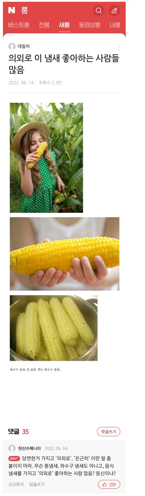

의외로 이 냄새 좋아하는 사람들 많음
댓글
호불호 갈리는 몸매
의외로 호불호 갈리는 몸매 좋아하는 개붕이들 많더라
이건 우정잉이 왜 이렇게 쓰는지 알아냄ㅋㅋㅋ 호불호 갈리는을 안쓰니까 뭘 가져와도 지랄하는 사람 꼭 하나는 걸림ㅋㅋ
맞말추
남자들 의외로 제육 좋아하는 사람 많음
당연한거 가지고 어쩌구 저쩌구 똥 하수구 등신이냐?
등신
의외로 정색하네
속이뻥
펌하고 머리감고 나는 냄새 좋음
속이 뻥
빵굽는냄새
은근히라 할거면 차라리 배꼽 냄새를 가져오지 ㅋㅋㅋㅋㅋ
의외로 남자 중에도 생리대 차고 다니는 사람 은근히 많음;
의외로 남자중에 임신못하는 사람 은근히 많음;
바지에 지려 본 개붕이의 경험담 잘 들었습니다
의외로 발끈하네
의외가 아니긴해 ㅋㅋ
갓딴 옥수수가 그렇게 맛나다던데 먹어보고싶다
수영장 락스냄새
병원 약냄새
배꼽냄새
페인트나 신나냄새
커담냄새
4, 5번 유해물질이라 절대 즐기면 안됨.. 1번도 좋은 냄새같진않음
속이뻥